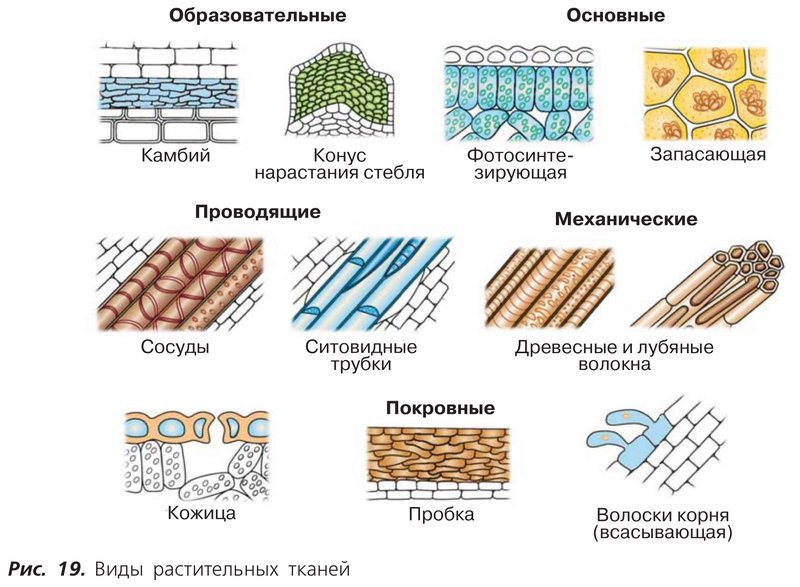
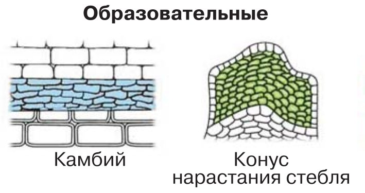
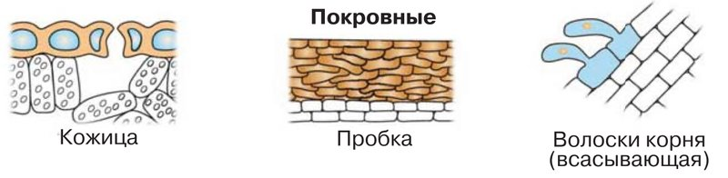
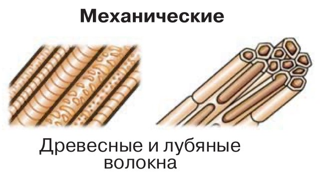
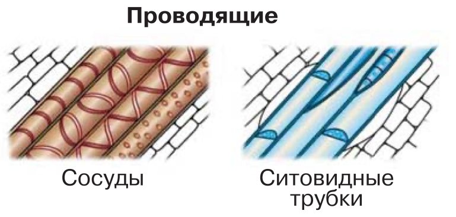
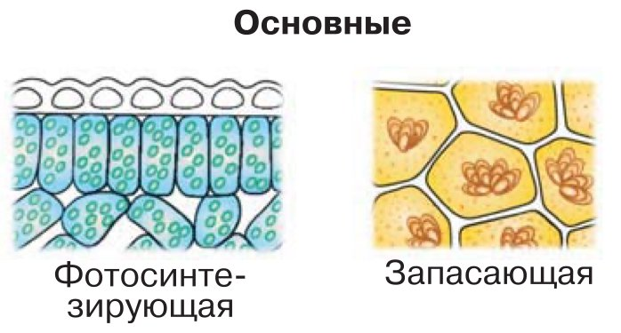

Особенности строения и функции растительных тканей
Амина, это тема о том, как клетки растения делят между собой работу и собираются в «бригады» — ткани.
Представь большой город. Строители возводят новые дома. Стены и заборы защищают от ветра и холода. Крепкие балки держат здания, чтобы те не рухнули. По трубам бежит вода, а на фабриках и складах делают и хранят еду.
У каждой команды свой инструмент и своя форма: у строителей каски и кирпичи, у водопроводчиков трубы. По виду работника легко догадаться, чем он занят.
Растение устроено так же. Его клетки не одинаковые: каждая группа клеток делает свою работу, и устроены эти клетки так, чтобы с работой справляться. Такая группа клеток называется тканью.
У растений пять видов тканей — как пять команд в городе:
В конце параграфа учебник спрашивает: чем можно объяснить особенности строения клеток разных растительных тканей? Держи этот вопрос в голове, пока идёшь по шагам. В последнем шаге мы соберём ответ.
У каждого шага написано, на какой странице учебника искать. Внизу шага есть «Подробнее, как в учебнике»: там всё, что есть на этих страницах, ничего не пропущено. Сначала учи по коротким шагам, а перед уроком открой «подробнее».
Надпись вверху шага подскажет, откуда он: синяя — из учебника, золотая — задание учебника, оранжевая — сверх учебника (пересказ, словарик, игры, самопроверка). В «Содержании» шаги так же разбиты на группы.
Подробнее, как в учебнике · с. 30
- Параграф называется «Особенности строения и функции растительных тканей». Он занимает с. 30–33 и относится к главе 1 «Растение — живой организм».
- В начале параграфа — рубрика «Вспомните» с двумя вопросами про клетки лука и элодеи. Они на шаге 2.
- Рубрика «Запомните» (с. 32) просит выучить слова: ткань; виды растительных тканей: образовательная, покровная, основная, механическая, проводящая; функция. Все эти слова есть в словарике.
- Рисунок 19 «Виды растительных тканей» (с. 30) разобран на шаге 4, а его части — на шагах про каждую ткань.
Вспомни клетки лука и элодеи
Параграф начинается с вопросов про лабораторные работы из § 2. Там ты рассматривала под микроскопом кожицу чешуи лука и лист водного растения элодеи.
Одинаковы ли форма и размеры клеток кожицы чешуи лука и листа элодеи?
Подсказка: открой свои зарисовки или рисунки 11 и 13 в § 2 (с. 18–20). Сравни: какой формы клетки, вытянутые они или нет, одного ли размера?
Какие различия в строении этих клеток вы отметили?
Подсказка: подумай про цвет и содержимое. В каких клетках были видны зелёные пластиды — хлоропласты? Какие клетки пришлось окрашивать йодом, чтобы разглядеть ядро?
Кожица лука укрывает чешую, а лист элодеи на свету делает питательные вещества. Работа разная — и клетки разные. Об этом весь параграф.
Что такое ткань?
Все органы растения — корень, стебель, лист — состоят из клеток. Но клетки эти не одинаковые.
Вспомни кожицу чешуи лука. Её клетки плотно прилегают друг к другу, а оболочки у них утолщённые — как кирпичи в крепкой стене. Такие клетки защищают растение от неблагоприятных условий внешней среды.
А клетки внутри стебля похожи на длинные трубочки. По ним, как по трубам, передвигаются питательные вещества.
Вывод учебника: особенности строения клеток связаны с функциями, которые они выполняют.
Функция (от латинского «функцио» — исполнение, осуществление) — это работа, обязанность. Функция кожицы лука — защищать, функция трубочек в стебле — проводить питательные вещества.
Совокупность клеток и межклеточного вещества, имеющих общее происхождение, строение и выполняющих определённые функции, называют тканью.
Разберём определение по словам
Совокупность клеток — много клеток вместе, группа.
Межклеточное вещество — то, что находится между клетками. Как раствор между кирпичами в стене.
Общее происхождение — эти клетки появились одинаковым путём, из одних и тех же клеток.
Строение — клетки устроены похоже.
Выполняют определённые функции — делают одну общую работу.
Короче: ткань — это бригада похожих клеток, которые вместе делают одно дело.
Подробнее, как в учебнике · с. 30
- Рубрика «Что такое ткань». Все органы растения имеют клеточное строение, но не все клетки одинаковы.
- Например, клетки кожицы чешуи лука плотно прилегают друг к другу и имеют утолщённые оболочки. Эти клетки защищают растения от неблагоприятных условий внешней среды.
- Клетки, находящиеся внутри стебля, имеют вид длинных трубочек, по ним передвигаются питательные вещества.
- Таким образом, особенности строения клеток связаны с выполняемыми ими функциями (от лат. функцио — исполнение, осуществление).
- Определение в рамке: совокупность клеток и межклеточного вещества, имеющих общее происхождение, строение и выполняющих определённые функции, называют тканью.
Какие бывают ткани?
Ткани растений делят на виды. Для этого смотрят на четыре вещи: как устроены клетки, какой они формы, как расположены относительно друг друга и какую работу выполняют.
По этим признакам выделяют пять видов растительных тканей: образовательные, покровные, механические, проводящие и основные.

Каждую ткань с этого рисунка мы разберём на отдельном шаге.
Подробнее, как в учебнике · с. 30
- Рубрика «Виды тканей». В зависимости от особенностей строения, формы, взаиморасположения и выполняемых функций выделяют несколько видов растительных тканей: образовательные, покровные, механические, проводящие и основные (рис. 19).
- Рис. 19 «Виды растительных тканей». Образовательные: камбий и конус нарастания стебля. Основные: фотосинтезирующая и запасающая. Проводящие: сосуды и ситовидные трубки. Механические: древесные и лубяные волокна. В нижнем ряду под заголовком «Покровные» — кожица и пробка, а рядом нарисованы волоски корня с подписью «всасывающая».
Образовательная ткань: строители
Клетки у неё маленькие и плотно прилегают друг к другу. Стенки у них тонкие, ядро относительно крупное, а вакуоли мелкие.
Главное умение этих клеток — делиться. Поэтому образовательные ткани ещё называют меристемами (от греческого «меристес» — делитель).
Что получается, когда они делятся?
- Клетки делятся на кончике корня и на верхушке стебля — и эти органы растут в длину. Верхушку стебля называют конусом нарастания.
- Стебель и корень толстеют благодаря образовательной ткани камбию — растут в толщину.
- Если растение поранили, клетки делятся и заживляют рану.
- Из этих клеток образуются все другие ткани растения. Отсюда и название — образовательная.
Почему дерево с каждым годом становится выше? Растёт его верхушка — конус нарастания. А почему ствол становится толще? Работает камбий.

А почему у строителей тонкие стенки?
Этим клеткам нужно всё время делиться. Толстая жёсткая «броня» им бы мешала. К этой мысли мы вернёмся в последнем шаге.
Подробнее, как в учебнике · с. 31
- Образовательные ткани состоят из небольших, плотно прилегающих друг к другу клеток с тонкими стенками, относительно крупным ядром и мелкими вакуолями.
- Клетки этих тканей способны делиться, поэтому их также называют меристемами (от греч. меристес — делитель).
- За счёт деления клеток образовательной ткани на кончике корня и верхушке стебля (конус нарастания) эти органы растут в длину.
- Разрастание стебля и корня в толщину происходит в результате деления клеток образовательной ткани — камбия.
- За счёт деления клеток образовательной ткани заживают раны, образовавшиеся на растении при повреждениях.
- В результате деления клеток этой ткани образуются все другие виды растительных тканей, отсюда и её название — образовательная.
- На рис. 19 (с. 30) образовательные ткани: камбий и конус нарастания стебля.
Покровная ткань: защитники
Покровные ткани выполняют защитную функцию. Они лежат на поверхности корней, стеблей и листьев — как кожа у человека или обложка у книги.
Их клетки бывают живыми или мёртвыми. Они плотно сомкнуты (между ними нет щёлочек), а оболочки у них утолщённые.
Кожица
Покровная ткань из живых клеток называется кожицей, или эпидермисом. Это тонкая прозрачная плёнка, которая покрывает органы растения. Помнишь плёнку, которую ты снимала пинцетом с чешуи лука в § 2? Это и есть кожица.
Пробка
Со временем на некоторых органах растения вместо кожицы образуется пробка. Клетки пробки мёртвые и полые (пустые внутри), оболочки у них утолщённые. Пробка надёжно защищает растение от неблагоприятных условий жизни.
Тонкая шкурка на клубне картофеля — это пробка. А в § 2 Роберт Гук рассматривал под микроскопом срез пробки дуба и увидел в нём ячейки — клетки.

Про волоски корня в тексте параграфа не рассказывают, их подробно разберут в теме про корень.
Подробнее, как в учебнике · с. 31
- Покровные ткани выполняют защитную функцию. Они образованы живыми или мёртвыми клетками с плотно сомкнутыми, утолщёнными оболочками. Эти ткани находятся на поверхности корней, стеблей, листьев.
- Покровную ткань, состоящую из живых клеток, называют кожицей, или эпидермисом. Она имеет вид тонкой прозрачной плёнки, покрывающей органы растения.
- Со временем на некоторых органах растений вместо кожицы образуется пробка. Клетки пробки мёртвые, полые, имеют утолщённые оболочки. Они надёжно защищают органы растения от неблагоприятных условий жизни.
- На рис. 19 (с. 30) под заголовком «Покровные» нарисованы кожица и пробка, а рядом — волоски корня (всасывающая).
Механическая ткань: каркас
Механические ткани придают растению прочность. Они образованы группами клеток с утолщёнными оболочками.
У некоторых клеток оболочки одревесневают — становятся твёрдыми, как дерево.
Часто клетки механической ткани длинные и похожи на нити. Их называют волокнами. На рисунке учебника — древесные и лубяные волокна.
Механическая ткань — как каркас у палатки: снаружи его не видно, но без него всё сложится. Благодаря ей тонкий стебель пшеницы не ломается на ветру, а ствол держит тяжёлую крону.

Подробнее, как в учебнике · с. 31
- Механические ткани придают прочность растениям. Они образованы группами клеток с утолщёнными оболочками.
- У некоторых клеток оболочки одревесневают.
- Часто клетки механической ткани удлинённые и имеют вид волокон.
- На рис. 19 (с. 30) механические ткани: древесные и лубяные волокна.
Проводящая ткань: водопровод
Проводящие ткани образованы живыми или мёртвыми клетками, похожими на трубки. По ним передвигаются растворённые в воде питательные вещества.
Трубки бывают двух видов:
Сосуды
мёртвые клетки
Полые (пустые внутри) клетки соединены одна за другой, а поперечные перегородки между ними исчезли. Получилась сплошная трубка.
Ситовидные трубки
живые клетки без ядра
Длинные клетки соединены одна за другой. Перегородки между ними остались, но в них есть отверстия, как в сите.
Сито — это решето с мелкими дырочками, через него просеивают муку. Отсюда и название «ситовидные».
Благодаря проводящим тканям в растении есть большая разветвлённая сеть. Она соединяет все органы растения в единую непрерывную систему — как водопровод, трубы которого тянутся в каждый дом города.

Подробнее, как в учебнике · с. 31
- Проводящие ткани образованы живыми или мёртвыми клетками, которые имеют вид трубок. По ним передвигаются растворённые в воде питательные вещества.
- Последовательно соединённые мёртвые полые клетки, поперечные перегородки между которыми исчезают, образуют сосуды проводящей ткани.
- Удлинённые безъядерные живые клетки, последовательно соединённые между собой, поперечные перегородки которых имеют отверстия (то есть похожи на сито), образуют ситовидные трубки проводящей ткани.
- Благодаря проводящим тканям в организме растения существует обширная разветвлённая сеть, соединяющая все органы растения в единую, непрерывную систему.
- На рис. 19 (с. 30) проводящие ткани: сосуды и ситовидные трубки.
Основная ткань: фабрики и склады
Основные ткани занимают всё пространство между покровными, механическими и проводящими тканями. Они состоят из живых клеток.
Основные ткани различают по тому, какую работу выполняют их клетки: фотосинтезирующая, воздухоносная, запасающая и другие.
Межклетники — промежутки между клетками. У воздухоносной ткани в них, как в пузырьках, хранится воздух.
У нас в Дагестане, на берегах Каспия и в Аграханском заливе, растут огромные заросли тростника. Тростник — болотное растение, и в его стеблях и корнях есть воздухоносная ткань: воздух помогает ему жить, стоя в воде.

Подробнее, как в учебнике · с. 31
- Основные ткани занимают пространство между покровными, механическими и проводящими тканями. Они состоят из живых клеток.
- В зависимости от того, какую функцию выполняют их клетки, различают фотосинтезирующую, воздухоносную, запасающую и другие основные ткани.
- Фотосинтезирующая ткань участвует в процессе образования органических соединений из неорганических за счёт энергии света.
- Воздухоносная ткань — это ткань водных и болотных растений, содержащая в межклетниках запасы воздуха.
- В клетках запасающей ткани откладываются различные органические вещества.
- На рис. 19 (с. 30) основные ткани: фотосинтезирующая и запасающая. Воздухоносной ткани на рисунке нет.
У всех ли растений одинаковые ткани?
Нет. У мхов и папоротников ткани примитивные, то есть простые, устроенные попроще.
Тело мха учёные называют таллом. Он состоит в основном из простой покровной ткани. Настоящих проводящей и механической тканей у мхов нет.
Покровная ткань мхов развита гораздо слабее, чем у сосудистых растений (так называют растения, у которых есть сосуды). Зато в ней есть хлоропласты, и она выполняет фотосинтезирующую работу.
Вместо проводящей ткани у мхов есть особые мёртвые клетки — водоносные. Благодаря им мхи удерживают воду. Поэтому мох на болоте похож на мокрую губку.
Сложные ткани
Разнообразные сложные группы тканей появились у высших наземных растений. Особенно они развиты у цветковых.
Их клетки стали узкими «специалистами», и многие разучились делиться. Поэтому у растений есть особые участки с молодыми делящимися клетками: они образуют новые ткани, и от них зависит рост растения. Узнаёшь? Это образовательная ткань из шага 5.
Простая или сложная?
Ткани растений и всех живых организмов — это комплексы из одинаковых или нескольких разных типов клеток. Ткань из одинаковых клеток называется простой, из нескольких разных — сложной.
Бригада, где все маляры и все красят стены, — как простая ткань. Бригада, где есть каменщик, электрик и сантехник, но строят они один дом, — как сложная.
Подробнее, как в учебнике · с. 31–32
- Примитивные ткани имеют мхи, папоротники. Тело, или, точнее сказать, таллом, моховидных состоит в основном из простой покровной ткани, настоящая проводящая и механическая ткани отсутствуют.
- Покровная ткань мхов развита на порядок слабее, чем у сосудистых растений (то есть намного слабее). Она включает в себя хлоропласты, выполняющие фотосинтезирующую функцию.
- Проводящая ткань мхов представлена только специальными мёртвыми клетками, их называют водоносными. Благодаря этим клеткам мхи способны удерживать воду.
- Разнообразные сложные группы специализированных тканей появились уже у высших наземных растений. Особенно они развиты у цветковых растений.
- Став строго специализированными, многие клетки потеряли способность делиться. Поэтому у растений есть такие участки, где расположены молодые клетки, делящиеся и образующие новые ткани. От них зависит рост растения.
- Ткани растений и всех живых организмов — это комплексы из одинаковых или нескольких разных типов клеток, отвечающих за определённые функции. Если ткань состоит только из одинаковых клеток, она называется простой, если построена из нескольких разных клеток — сложной.
Кто придумал слово «ткань»?
Помнишь Роберта Гука из § 2? Он первым увидел в пробке ячейки и назвал их клетками. В том же XVII веке растения под микроскопом изучали ещё двое учёных: итальянец Марчелло Мальпиги (1628–1694) и англичанин Неемия Грю (1641–1712).
Они работали независимо друг от друга, но одновременно — и даже поспорили, кто был первым. Характеры у них были противоположные: Грю объяснял свои занятия наукой желанием понять дело Творца, а Мальпиги говорил о «человеческом зуде познания» — просто очень хочется узнать!
Грю называл клетки «мешочками» и «пузырьками» и показал, что они есть во всех органах растения. А ещё он первым ввёл в биологию слово «ткань»: строение растения казалось ему похожим на ткань для одежды — переплетение тонких нитей.
Но ни Гук, ни Мальпиги, ни Грю ещё не понимали, что клетка — это отдельная живая «единица». Они видели клетки, описывали и рисовали их, но по-настоящему клетку не знали.
1. Прочитай текст. 2. Подумай, какой вывод можно сделать о значении открытий в развитии науки. Обсуди это с одноклассниками.
Подсказка к заданию
Выстрой цепочку: Гук увидел ячейки в пробке → Мальпиги и Грю нашли их во всех органах растений, Грю придумал слово «ткань» → учёные задумались, что у всех растений есть общее тонкое строение, и позже пришли к клеточной теории.
Что было бы, если бы кто-то из них не сделал своего шага? Может ли один учёный сразу открыть всё? Вывод сформулируй сама.
Подробнее, как в учебнике · с. 33
- Задание к рубрике: 1. Прочитайте текст. 2. Подумайте, какой вывод можно сделать о значении открытий в развитии науки. Обсудите этот вопрос с учащимися класса.
- В XVII веке не только Гук изучал строение растений под микроскопом. Современники Роберта Гука, два выдающихся натуралиста — итальянский учёный Марчелло Мальпиги (1628–1694) и английский учёный Неемия Грю (1641–1712), — независимо друг от друга изучали строение растений и выявили клеточную структуру в различных органах растений.
- Одновременность их работ даже породила между ними спор о приоритете (о том, кто был первым).
- Мальпиги и Грю были во многом противоположными фигурами. Грю обосновывал свои занятия наукой постижением дела Творца, а Мальпиги говорил, что желание исследовать — это импульс, который он называл «человеческим зудом познания».
- Независимо от Мальпиги Грю открыл в растениях клетки и сосуды и описал их даже подробнее. Для клеток он употреблял слова «мешочки», «пузырьки», и под этим названием клетки существовали почти до начала XIX века.
- По мнению Грю, «пузырьки» паренхимы (мякоти) органов растения замкнуты, их стенки не пронизаны порами. Клеточное строение паренхимы Грю сравнивал с пеной в напитке.
- Никаких обобщений о том, что растения построены из «пузырьков», Грю не сделал, хотя видел их повсюду: это видно по его многочисленным прекрасным рисункам. Но по сравнению с Гуком это был решительный шаг вперёд: Грю показал, что «поры» (то есть клетки) есть во всех органах растений.
- Грю впервые ввёл в биологию термин «ткань», который так важен в современной науке. Но для Грю это значило лишь, что строение растений похоже на плетение текстильной ткани: переплёт тонких волокон, идущих вдоль и поперёк и образующих тонкую петлистую сеть. Эти волоконца связывают в одно целое мешочки, волокна и сосуды растений.
- Свои сочинения по анатомии растений Мальпиги и Грю почти одновременно представили в Лондонское королевское общество (научное общество в Англии). Работа Мальпиги была скорее гениальным наброском, где он устанавливал лишь основы строения растений, а сочинение Грю — руководством, заботливо проработанным во всех деталях.
- Для истории клеточной теории труды Грю были важны прежде всего тем, что будили мысль: у разных растений и в разных их органах есть какая-то общая тонкая структура.
- Но и Грю был далёк от мысли, что мешочки, которые он наблюдал, — самостоятельная элементарная анатомическая единица. Как Гук и Мальпиги, Грю видел клеточное строение растений, описывал его и изображал на своих превосходных иллюстрациях, но не понимал этого строения и, по существу, не знал клетки.
Ткани под микроскопом
Задание учебника: рассмотри под микроскопом готовые микропрепараты разных растительных тканей и отметь, как устроены их клетки. Потом по тому, что увидела, и по тексту параграфа заполни таблицу и сделай вывод.
Готовый микропрепарат — стёклышко, на котором уже лежит тонкий срез растения под покровным стеклом. Самой ничего резать и окрашивать не нужно.
Своими глазами увидеть, что клетки разных тканей устроены по-разному, и связать строение клеток с их работой.
- микроскоп;
- готовые микропрепараты разных растительных тканей (их выдаёт учитель);
- тетрадь, простой карандаш и линейка, чтобы начертить таблицу.
Ход работы
- Подготовь микроскоп, как на лабораторных работах в § 2: поставь его перед собой и настрой свет, чтобы в окуляре было светло.
- Положи первый препарат на предметный столик и закрепи зажимами. Медленно вращай винт, пока клетки не станут видны чётко.
- Рассмотри клетки и отметь: какой они формы (короткие, длинные, как трубочки), плотно ли прилегают друг к другу, тонкие у них оболочки или толстые, есть ли внутри содержимое, видны ли зелёные хлоропласты.
- Узнай у учителя или по подписи на стёклышке, какая это ткань.
- Так же рассмотри остальные препараты.
- Начерти в тетради таблицу из трёх столбцов, как в учебнике, и заполни её: одна строка — одна ткань. Функции тканей проверь по тексту параграфа (шаги 5–9).
- Сделай вывод.
- Микроскоп переноси двумя руками: одной держи за штатив, другой поддерживай снизу.
- Препараты стеклянные: бери их за края и не роняй. Если стекло разбилось, не собирай осколки руками, позови учителя.
- Не направляй зеркало микроскопа на солнце: яркий солнечный свет опасен для глаз.
- Когда опускаешь трубку микроскопа, смотри сбоку, чтобы объектив не раздавил стёклышко.
Как заполнять таблицу: пример на другом
Вот образец строки, только не про ткань, а про крышу дома из нашего «города». Твоя таблица — про ткани растения.
| Название ткани | Выполняемая функция | Особенности строения клеток |
|---|---|---|
| Черепица | защищает дом от дождя и снега | плитки плотно прилегают друг к другу, толстые и твёрдые |
Ответь себе на два вопроса. Одинаково ли устроены клетки разных тканей? Как строение клеток каждой ткани помогает ей делать свою работу? Начать можно так: «Я рассмотрела клетки … и увидела, что …».
Подробнее, как в учебнике · с. 32
- Рубрика «Моя лаборатория», задание «Выполните задание»: рассмотрите под микроскопом готовые микропрепараты различных растительных тканей, отметьте особенности строения их клеток. По результатам изучения микропрепаратов и текста параграфа заполните таблицу и сделайте вывод.
- Таблица в учебнике: три столбца — «Название ткани», «Выполняемая функция», «Особенности строения клеток».
- Цели, списка оборудования и хода работы в этом задании учебник не даёт: они написаны выше по образцу лабораторных работ из § 2.
Словарик: ткань, строители, защитники
ИграНажми на карточку, и она перевернётся. Словарик из двух частей, открой все карточки.
Словарик: каркас, трубы, склады
ИграВторая часть: пробка, механическая, проводящая и основная ткани.
Кто что делает?
ИграУ каждой ткани своя работа. Нажми на ткань слева, потом на её работу справа.
Чья это клетка?
ИграУ покровной, механической и проводящей тканей часто толстые оболочки или мёртвые клетки, их легко перепутать. Прочитай карточку и выбери, про какую она ткань.
Найди лишнее
ИграТри из одной компании, одно чужое. Найди чужое.
Проверь себя
Вопросы из учебника
Это вопросы из рубрики «Проверьте себя», номера такие же, как в твоём учебнике, а ниже — остальные задания параграфа. Рядом с каждым написано, на каком шаге искать ответ. Отвечай своими словами: так лучше запоминается, и учитель услышит, что ты поняла, а не заучила.
Что называют тканью?
Подсказка: в определении учебника сказано, из чего состоит ткань и что общего у её клеток. Разбор определения по словам — на шаге 3.
Шаг 3 · Что такое тканьКакие виды тканей известны у растений?
Подсказка: их пять. Вспомни пять команд «города» из шага 1.
Шаг 4 · Виды тканейКакое строение могут иметь клетки проводящей ткани?
Подсказка: трубки бывают двух видов. Какие клетки живые, какие мёртвые, что стало с перегородками между ними?
Шаг 8 · Проводящая тканьКакую функцию выполняют клетки образовательной ткани?
Подсказка: главное умение этих клеток спрятано в их втором названии. А что благодаря этому происходит с растением? В учебнике четыре пункта.
Шаг 5 · Образовательная тканьПодумайте! Чем можно объяснить особенности строения клеток разных растительных тканей?
Шаг 20 · ПодумайМоя лаборатория. Рассмотрите под микроскопом готовые микропрепараты различных растительных тканей, отметьте особенности строения их клеток. По результатам изучения микропрепаратов и текста параграфа заполните таблицу («Название ткани», «Выполняемая функция», «Особенности строения клеток») и сделайте вывод.
Подсказка: ход работы, правила и образец строки таблицы — на шаге 12.
Шаг 12 · Ткани под микроскопомЭто интересно. 1. Прочитайте текст. 2. Подумайте, какой вывод можно сделать о значении открытий в развитии науки. Обсудите этот вопрос с учащимися класса.
Подсказка: вспомни, что сделал каждый из трёх учёных и чего они ещё не знали.
Шаг 11 · Кто придумал слово «ткань»Подробнее, как в учебнике · с. 32–33
- Рубрика «Запомните»: ткань; виды растительных тканей: образовательная, покровная, основная, механическая, проводящая; функция.
- Все вопросы и задания страниц 32–33 перечислены выше: «Проверьте себя» (4 вопроса), «Подумайте!», «Моя лаборатория» и задание к рубрике «Это интересно».
Подумай: чем можно объяснить особенности строения клеток разных растительных тканей?
Это вопрос из рубрики «Подумайте!». Вот четыре «кирпичика» для ответа. Открой их, а потом попробуй ответить своими словами, не подглядывая.
Ткань — это группа клеток с общим происхождением и строением, которые вместе выполняют одну работу; у растений пять видов тканей — образовательная, покровная, механическая, проводящая и основная, — и клетки каждой устроены так, чтобы лучше справляться со своей работой.